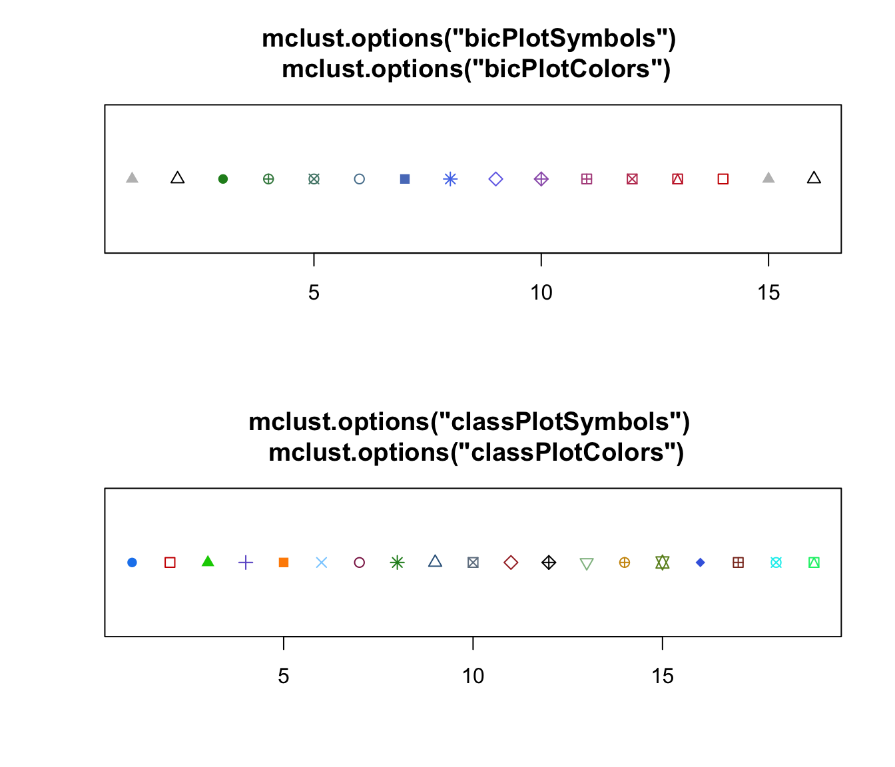

Default values for use with MCLUST package
mclust.options.RdSet or retrieve default values for use with MCLUST package.
Details
mclust.options() is provided for assigning or retrieving default values used by various functions in MCLUST.
Available options are:
emModelNamesA vector of 3-character strings that are associated with multivariate models for which EM estimation is available in MCLUST.
The current default is all of the multivariate mixture models supported in MCLUST. The help file formclustModelNamesdescribes the available models.hcModelNameA character string specifying the multivariate model to be used in model-based agglomerative hierarchical clustering for initialization of EM algorithm.
The available models are the following:"EII"spherical, equal volume;
"EEE"ellipsoidal, equal volume, shape, and orientation;
"VII"spherical, unequal volume;
"VVV"ellipsoidal, varying volume, shape, and orientation (default).
hcUseA character string specifying the type of input variables/transformation to be used in model-based agglomerative hierarchical clustering for initialization of EM algorithm.
Possible values are:"VARS"original variables;
"STD"standardized variables (centered and scaled);
"SPH"sphered variables (centered, scaled and uncorrelated) computed using SVD;
"PCS"principal components computed using SVD on centered variables (i.e. using the covariance matrix);
"PCR"principal components computed using SVD on standardized (center and scaled) variables (i.e. using the correlation matrix);
"SVD"scaled SVD transformation (default);
"RND"no transformation is applied but a random hierarchical structure is returned (see
hcRandomPairs).
For further details see Scrucca and Raftery (2015), Scrucca et al. (2016).
subsetA value specifying the maximal sample size to be used in the model-based hierarchical clustering to start the EM algorithm. If data sample size exceeds this value, a random sample is drawn of size specified by
subset.fillEllipsesA logical value specifying whether or not to fill with transparent colors ellipses corresponding to the within-cluster covariances in case of
"classification"plot for'Mclust'objects, or"scatterplot"graphs for'MclustDA'objects.bicPlotSymbolsA vector whose entries correspond to graphics symbols for plotting the BIC values output from
MclustandmclustBIC. These are displayed in the legend which appears at the lower right of the BIC plots.bicPlotColorsA vector whose entries correspond to colors for plotting the BIC curves from output from
MclustandmclustBIC. These are displayed in the legend which appears at the lower right of the BIC plots.classPlotSymbolsA vector whose entries are either integers corresponding to graphics symbols or single characters for indicating classifications when plotting data. Classes are assigned symbols in the given order.
classPlotColorsA vector whose entries correspond to colors for indicating classifications when plotting data. Classes are assigned colors in the given order.
warnA logical value indicating whether or not to issue certain warnings. Most of these warnings have to do with situations in which singularities are encountered. The default is
warn = FALSE.
The parameter values set via a call to this function will remain in effect for the rest of the session, affecting the subsequent behaviour of the functions for which the given parameters are relevant.
Value
If the argument list is empty the function returns the current list of values. If the argument list is not empty, the returned list is invisible.
References
Scrucca L. and Raftery A. E. (2015) Improved initialisation of model-based clustering using Gaussian hierarchical partitions. Advances in Data Analysis and Classification, 9/4, pp. 447-460.
Scrucca L., Fop M., Murphy T. B. and Raftery A. E. (2016) mclust 5: clustering, classification and density estimation using Gaussian finite mixture models, The R Journal, 8/1, pp. 289-317.
Examples
opt <- mclust.options() # save default values
irisBIC <- mclustBIC(iris[,-5])
summary(irisBIC, iris[,-5])
#> Best BIC values:
#> VEV,2 VEV,3 VVV,2
#> BIC -561.7285 -562.5522369 -574.01783
#> BIC diff 0.0000 -0.8237748 -12.28937
#>
#> Classification table for model (VEV,2):
#>
#> 1 2
#> 50 100
mclust.options(emModelNames = c("EII", "EEI", "EEE"))
irisBIC <- mclustBIC(iris[,-5])
summary(irisBIC, iris[,-5])
#> Best BIC values:
#> EEE,5 EEE,6 EEE,7
#> BIC -604.8131 -609.854322 -632.49473
#> BIC diff 0.0000 -5.041255 -27.68166
#>
#> Classification table for model (EEE,5):
#>
#> 1 2 3 4 5
#> 6 44 49 35 16
mclust.options(opt) # restore default values
mclust.options()
#> $emModelNames
#> [1] "EII" "VII" "EEI" "VEI" "EVI" "VVI" "EEE" "VEE" "EVE" "VVE" "EEV" "VEV"
#> [13] "EVV" "VVV"
#>
#> $hcModelName
#> [1] "VVV"
#>
#> $hcUse
#> [1] "SVD"
#>
#> $subset
#> [1] 2000
#>
#> $fillEllipses
#> [1] FALSE
#>
#> $bicPlotSymbols
#> EII VII EEI EVI VEI VVI EEE VEE EVE VVE EEV VEV EVV VVV E V
#> 17 2 16 10 13 1 15 8 5 9 12 7 14 0 17 2
#>
#> $bicPlotColors
#> EII VII EEI EVI VEI VVI EEE VEE
#> "gray" "black" "#218B21" "#41884F" "#508476" "#58819C" "#597DC3" "#5178EA"
#> EVE VVE EEV VEV EVV VVV E V
#> "#716EE7" "#9B60B8" "#B2508B" "#C03F60" "#C82A36" "#CC0000" "gray" "black"
#>
#> $classPlotSymbols
#> [1] 16 0 17 3 15 4 1 8 2 7 5 9 6 10 11 18 12 13 14
#>
#> $classPlotColors
#> [1] "dodgerblue2" "red3" "green3" "slateblue"
#> [5] "darkorange" "skyblue1" "violetred4" "forestgreen"
#> [9] "steelblue4" "slategrey" "brown" "black"
#> [13] "darkseagreen" "darkgoldenrod3" "olivedrab" "royalblue"
#> [17] "tomato4" "cyan2" "springgreen2"
#>
#> $warn
#> [1] FALSE
#>
oldpar <- par(mfrow = c(2,1), no.readonly = TRUE)
n <- with(mclust.options(),
max(sapply(list(bicPlotSymbols, bicPlotColors),length)))
plot(seq(n), rep(1,n), ylab = "", xlab = "", yaxt = "n",
pch = mclust.options("bicPlotSymbols"),
col = mclust.options("bicPlotColors"))
title("mclust.options(\"bicPlotSymbols\") \n mclust.options(\"bicPlotColors\")")
n <- with(mclust.options(),
max(sapply(list(classPlotSymbols, classPlotColors),length)))
plot(seq(n), rep(1,n), ylab = "", xlab = "", yaxt = "n",
pch = mclust.options("classPlotSymbols"),
col = mclust.options("classPlotColors"))
title("mclust.options(\"classPlotSymbols\") \n mclust.options(\"classPlotColors\")")

par(oldpar)